library(ggplot2)
ggplot(mtcars, aes(x = wt, y = mpg)) +
geom_point()
ggplot2
ggplot2 is the primary visualization package in R. It is based on the grammar of graphics, a system for building plots by combining components.
ggplot(data, aes(...)) +
geom_*()data: datasetaes(): maps variables to visual propertiesgeom_*(): defines how data are drawn+: adds layerslibrary(ggplot2)
ggplot(mtcars, aes(x = wt, y = mpg)) +
geom_point()
ggplot(mtcars, aes(wt, mpg, color = factor(cyl))) +
geom_point()
ggplot(mtcars, aes(wt, mpg)) +
geom_point(color = "blue")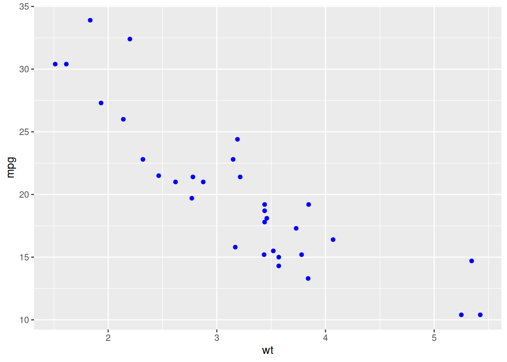
ggplot(mtcars, aes(wt, mpg)) +
geom_point() +
geom_smooth(method = "lm", se = FALSE)`geom_smooth()` using formula = 'y ~ x'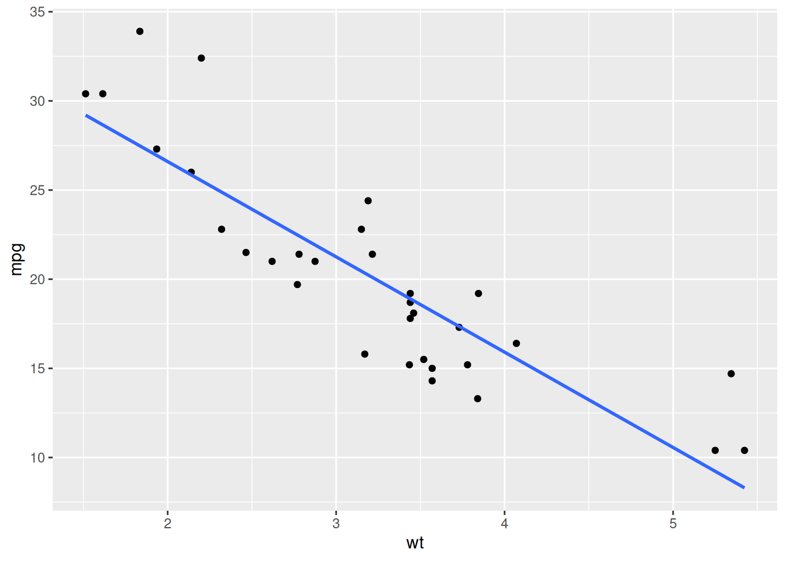
# Better color palette
ggplot(mtcars, aes(wt, mpg, color = factor(cyl))) +
geom_point(size = 2) +
scale_color_brewer(palette = "Set1")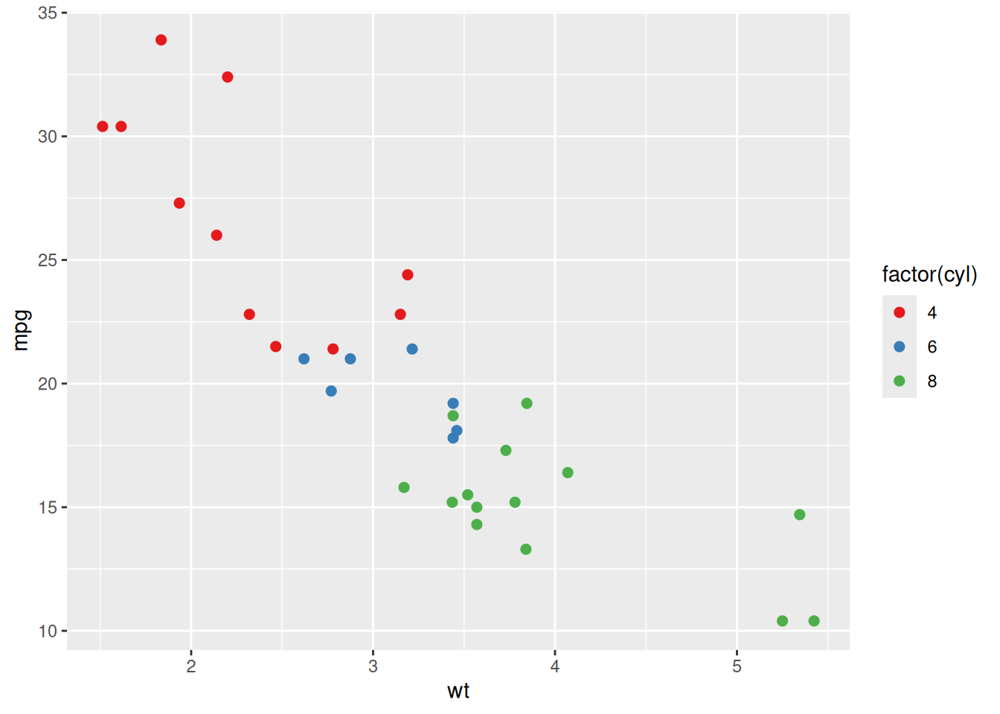
# Continuous color scale
ggplot(mtcars, aes(wt, mpg, color = mpg)) +
geom_point(size = 2) +
scale_color_viridis_c()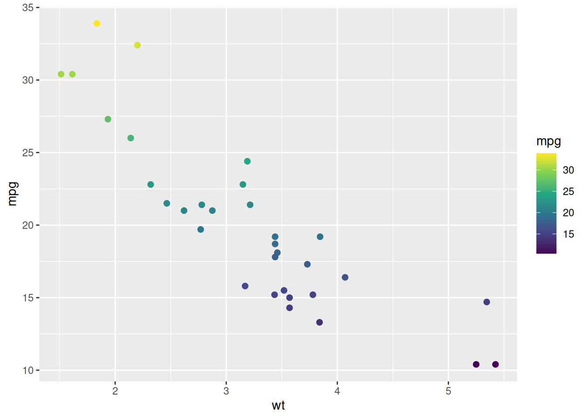
ggplot(mtcars, aes(wt, mpg)) +
geom_point() +
geom_smooth(method = "lm", se = FALSE) +
labs(
title = "Fuel Efficiency vs Weight",
x = "Weight",
y = "Miles per Gallon"
)`geom_smooth()` using formula = 'y ~ x'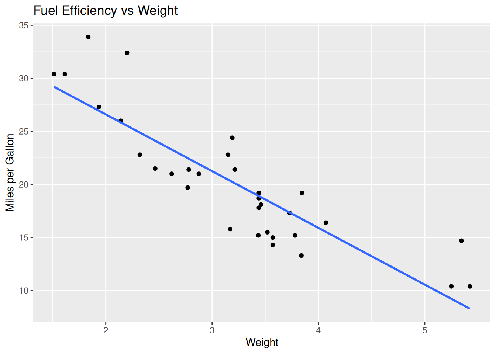
Themes control the overall appearance of your plot.
ggplot(mtcars, aes(wt, mpg)) +
geom_point() +
theme_minimal()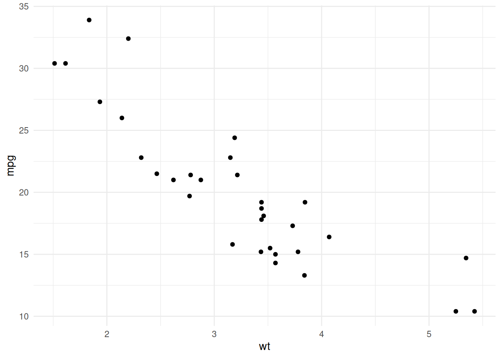
ggplot(mtcars, aes(wt, mpg)) +
geom_point() +
theme_classic()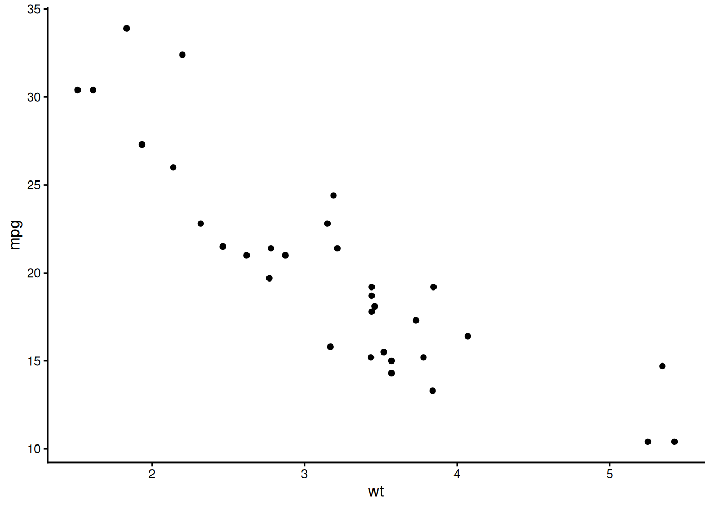
ggplot(mtcars, aes(wt, mpg)) +
geom_point() +
theme_minimal() +
theme(
plot.title = element_text(size = 14, face = "bold"),
axis.title = element_text(size = 12)
)ggplot(mtcars, aes(wt, mpg)) +
geom_point() +
facet_wrap(~ cyl)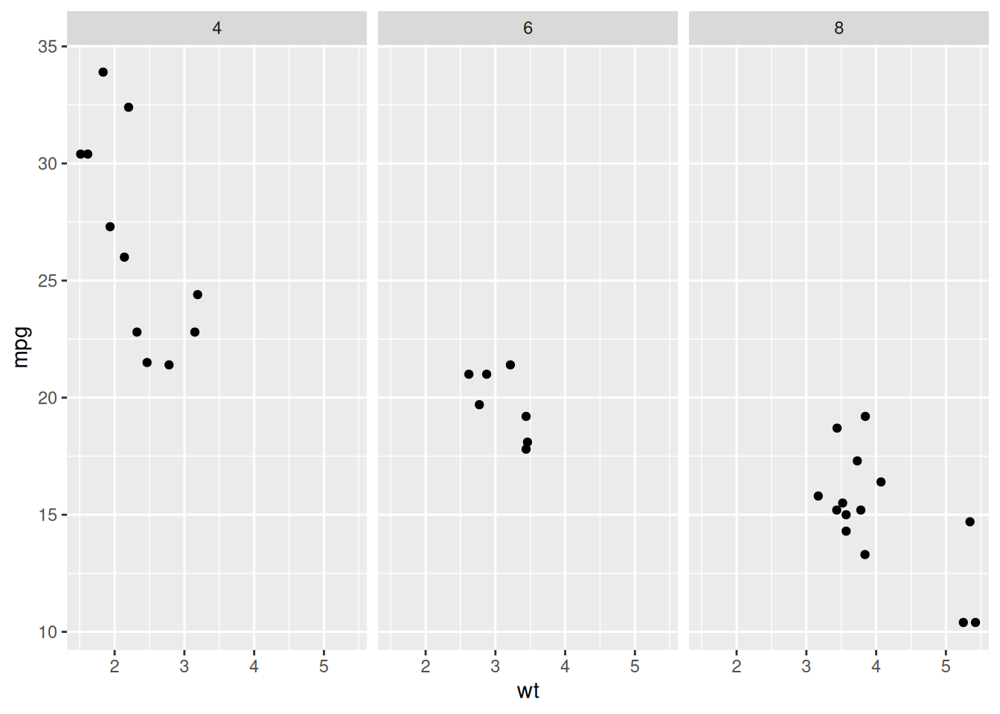
ggplot(mtcars, aes(wt, mpg)) + geom_point()
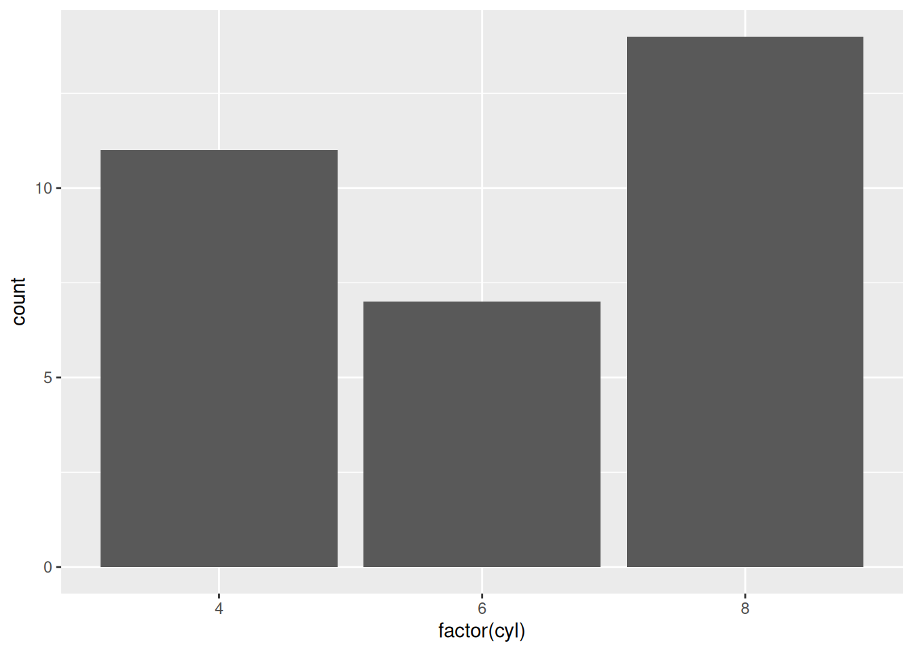
ggplot(mtcars, aes(mpg)) + geom_histogram(bins = 10)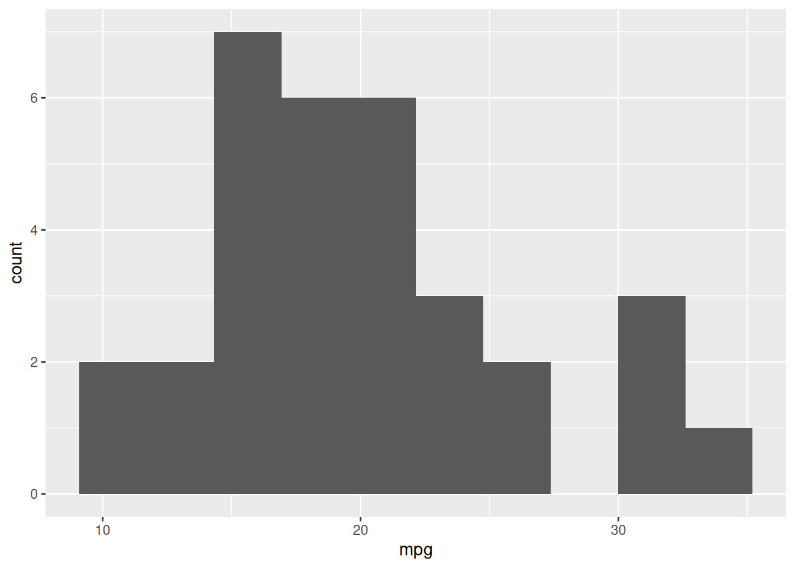
ggplot(mtcars, aes(factor(cyl), mpg)) + geom_boxplot()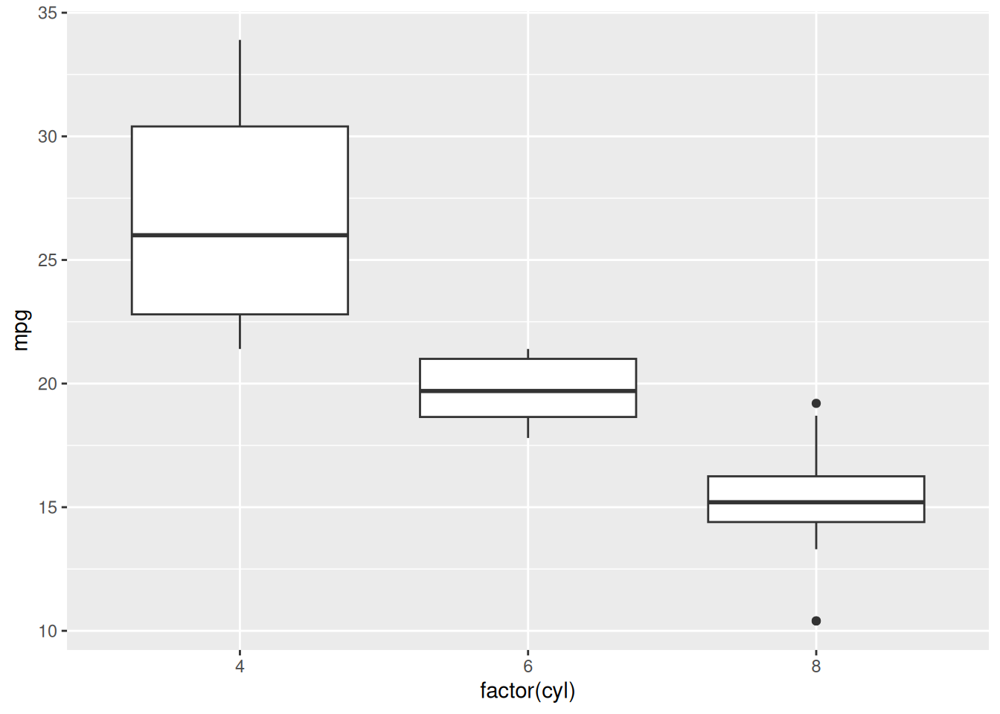
ggplot(data, aes(...))+aes()Starting with the following plot, do the following:
amggplot(mtcars, aes(wt, mpg)) +
geom_point()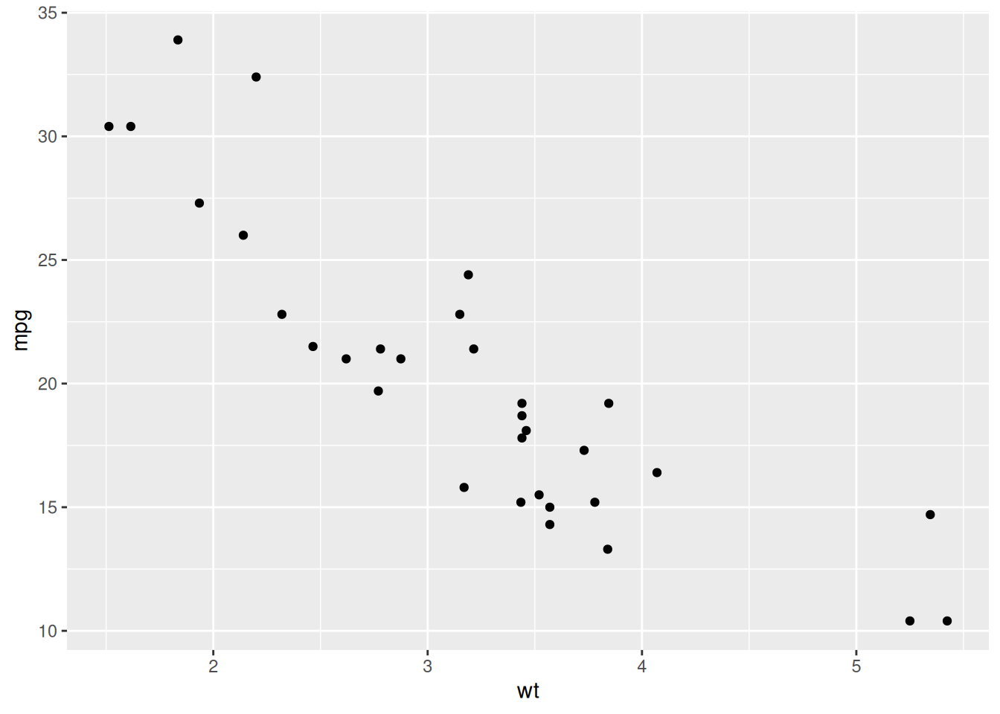